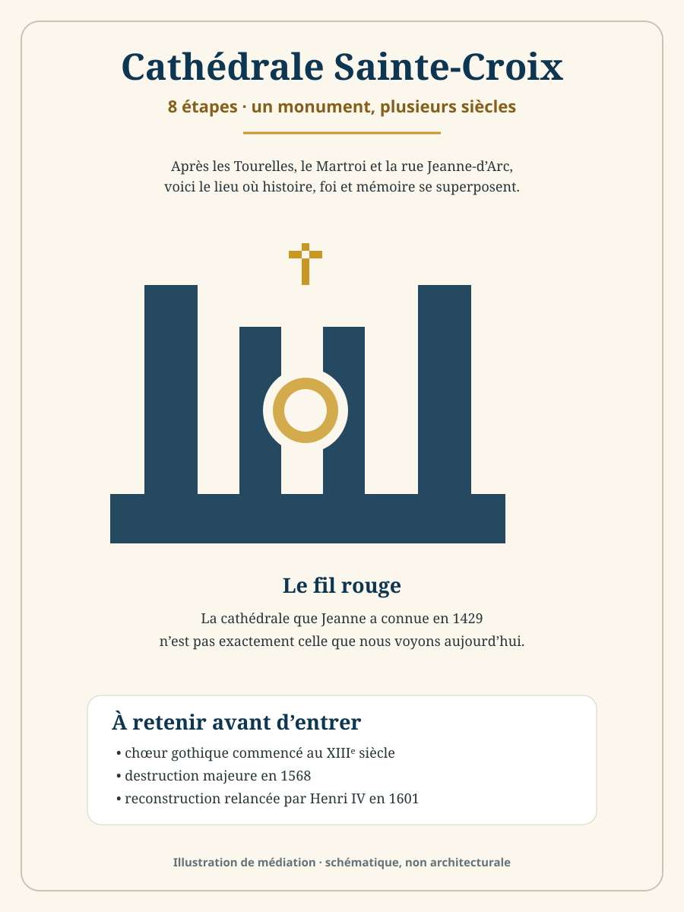
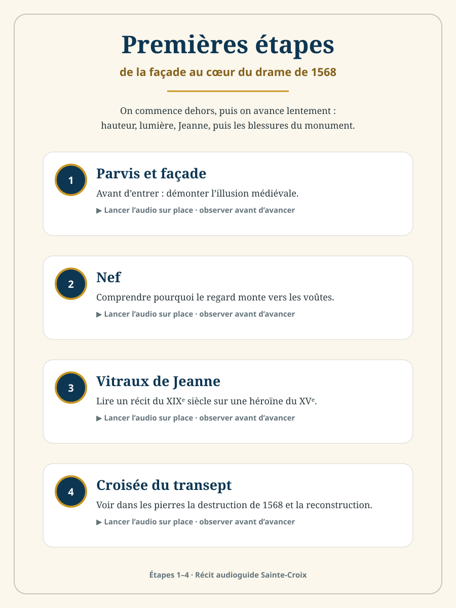
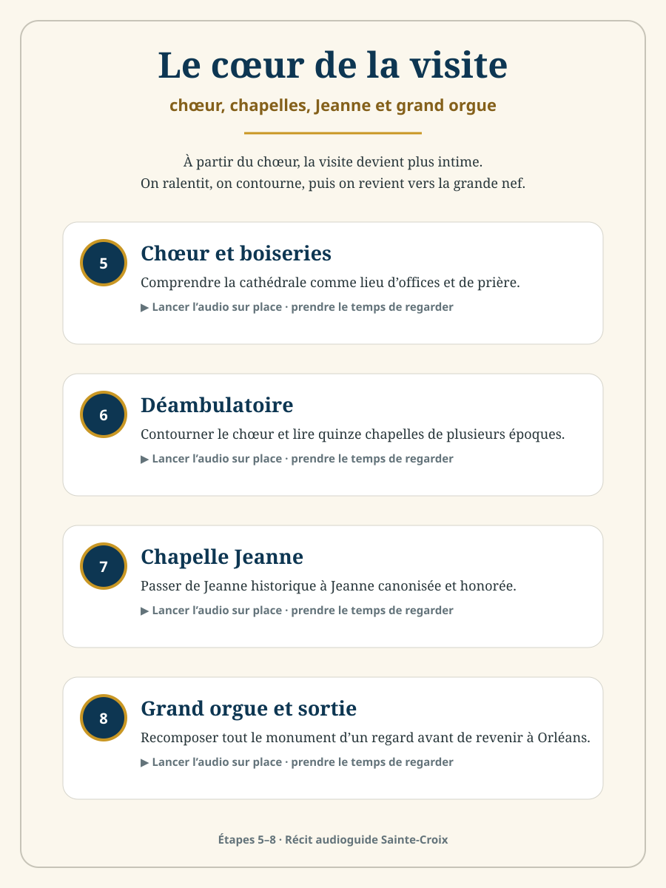
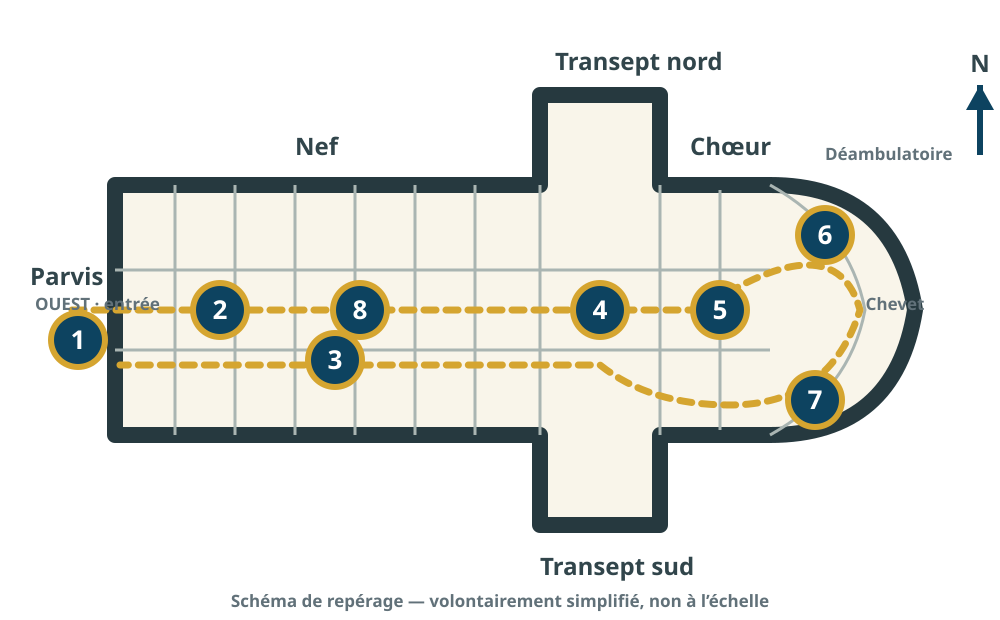

Récit audioguide · extension Orléans à pied
Cathédrale Sainte-Croix
Huit étapes pour comprendre ce que vous voyez — et surtout ce que Jeanne d’Arc, Henri IV, Louis XIV et les visiteurs des siècles passés n’ont pas vu de la même manière.
Respect du lieu : Sainte-Croix reste une cathédrale en activité. Pendant un office, restez discret et limitez vos déplacements. Informations officielles ↗



Plan de visite — cliquez sur une pastille
Entrée à gauche, chœur et chevet à droite. Schéma volontairement simplifié et non à l’échelle.

Chargement du parcours…
📍 Ouvrir Sainte-Croix dans Google Maps ↗